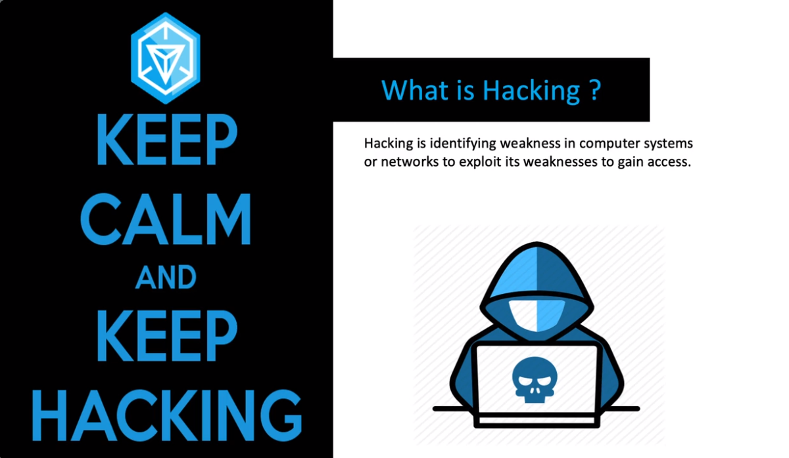

#SECRET 1 -- THE first requirement for becoming the hacker is to Learn the Kali Linux operating system The kali linux has all the tools preinstalled that mostly used in penetration testing The Kali is based on Linux operating System. The metasploit is like A Brahmaashtra for the hackers , it can almost hack any of the device if the code is written properly Learning metasploit is the backbone of the hackers . Bug Bounty is a programme which is used to make money by finding the bugs inside any website or an application Bug bounty can be done when a person have a prior knowledge of the tools and scripting and Technology.
#SECRET 2 -- The second secret to become a hacker is To Learn the Computer Forensics . The computer Forensics deals with the Digital Evidence that is When a person deletes or format its memory The data that is formatted or deleted permanently is actually not deleted from computer When a crime happens The attacker will try to format All the data from the computer , But it can be recovered by the Investigation Department These all comes under the computer Forensics ------------------------------------------------------------------------------------------ Second subpart is to know how to run the darknet and deepweb . The Internet is that we mostly use ex-Google etc are the surface internet and it covers only about the 10% of the Complete internet The Darknet : The darknet is a network, and the deep web constitutes the chunk of the World Wide Web that is beyond the reach of the search engines. So, we can decipher the dark web as the World Wide Web of the darknets like Tor, Freenet, etc. That is, the services and websites running on the darknet is the dark web. Deep Web: It is the web which cannot be accessed by the search engines, like government private data, bank data, cloud data etc. These data are sensitive and private,so kept out of reach. It is used to provide access to a specific to a specific group of people. ------------------------------------------------------------------------------------------- Third subpart is to detect the malwares and learn how to remove it. Hackers generally inject it through files , e-mails , etc to inject malwares to stole private files or informations .
#SECRET-- 3 :: The third and the last secret is to investigate the cyber crimes and learn about some cyber laws .In Today's era of the world the attackers are trying to gain access on the peoples bank account and on the social media accounts and planning to take access on the victim's phone . In order to prevent this A hacker should have to know about , how to get rid of it and save the attacks that was going to happen on the victim phone etc.
